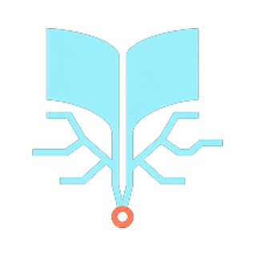

嗨，我是 idevlab
创业者 · AI-native 开发者。我做 macOS 原生应用和 AI Agent 工具， 也写一些关于科技与人文的文字。相信 "keep learning, keep shipping."
108
公开仓库
2,062
过去一年贡献
89
博客文章
8 年+
GitHub 之旅
现在在做
- ◆打造 Agent 插件市场与 Skills 工具链
- ◆写 macOS 原生应用：下载器、语音输入、桌面宠物
- ◆探索本地优先与浏览器内推理（WebLLM）
语言构成
TypeScript29%
JavaScript14%
C#10%
Swift9%
Rust / Go11%
精选项目
数据来自 GitHub · 每日自动同步
Mk
agent-plugin-mktTypeScript · 平台 · pluginsmp.com
开源的 Agent 插件市场：发现 Codex、Claude Code 与 Agent 插件，提供 Web、REST API、MCP 与 agent 可读目录。
TypeScriptMCPAgent访问 →

kiteSwift · macOS
原生 macOS 26+ 多协议下载器，SwiftUI + aria2-next。
Swift→

utterSwift · 语音
菜单栏里的本地 AI 语音输入，隐私不出本机。
Local AI→

doubao-skinRust · 主题
为豆包与豆包工作台打造的 macOS 主题与工具链。
Rust→

supermanSkills · ★ 13
聚合顶级思想家与极客思维框架的 Agent Skills——每个视角都是可运行的认知算法。
Skills→
Lf
larkfsGo · 文件系统
把飞书 / Lark 映射为本地可读写的文件目录。
Go→

页脉 yemaiJavaScript · 阅读
本地优先的 AI 阅读记忆书架。
Local-first→
全部 108 个仓库
在 GitHub 上查看
最近在写
来自博客 · 每日同步最新文章
文艺复兴让人变宽，工业社会把人折叠了
从达芬奇的跨界通才，到工业社会的专业折叠，再到 AI 时代重新展开的可能性。
Open Source 社区正在死去，先死在维护者不再相信陌生人
低质量 PR 与简历流水线正在压垮开源维护者，但开源的免疫系统正在苏醒。
AI 的价值，正在从解答已知走向探索未知
89 篇文章在博客里
我们太小了，所以要造更大的工具；太短暂了，所以要建立可积累的文明。
关于 AI、开源、macOS 与人文的长期写作——去看看？
前往博客 →